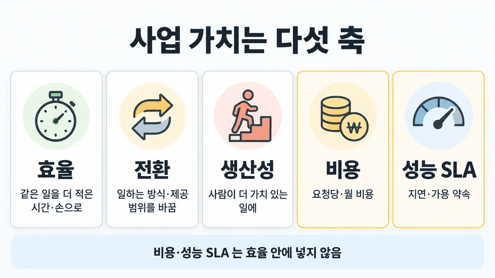
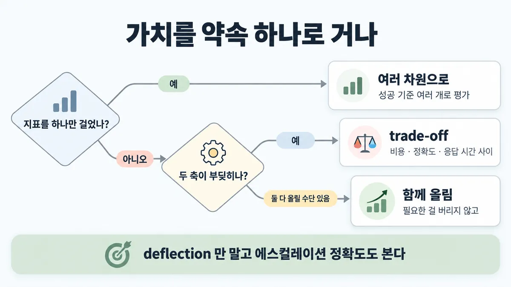
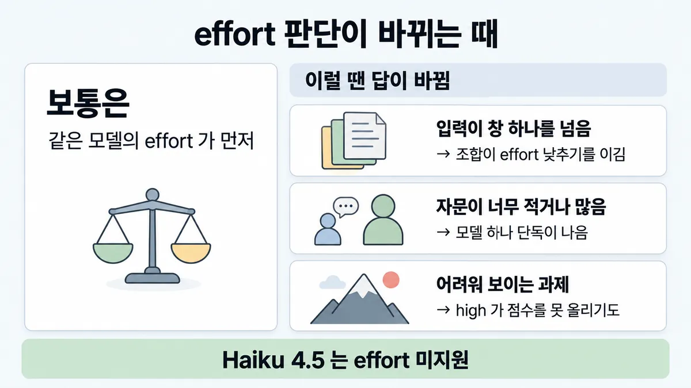

■ value pillars 5개
표시가 없는 문장은 공식 문서에서 확인한 내용이에요. 다른 표시는 읽는 법
왜 배우나 — 시험이 요구하는 것
시험 목표 1.6 비즈니스 가치 축 맞추기 · D1 설계 17%Align solutions to business value pillars (efficiency, transformation, productivity, cost, performance SLAs)
이 개념으로 푸는 판단 (할 수 있어야 하는 것)
- 1.6① 이 설계의 가치를 어느 축으로 말하나? — 가치 축 짝짓기 — 효율·전환·생산성·비용·성능 SLA
한눈에
설계안의 사업 가치를 말하는 축. 가이드 목표 문구 그대로 5개 = 효율 · 전환 · 생산성 · 비용 · 성능 SLA
비용과 성능 SLA 는 각각 따로 선 축 — 효율 안에 넣지 않음 (목표 문구에 5개가 나란히)
축마다 무슨 뜻인지는 가이드가 정의하지 않음 → 아래 "뜻" 풀이와 지표를 축에 짝짓는 건 업계 일반
비유 FinOps(비용)와 SRE(SLO)가 따로 있는 이유. 한 "효율" 보고서에 섞으면 한쪽이 가려짐


ELI5
가게에 새 기계를 들일 때 "무엇이 좋아지나"를 다섯 칸에 나눠 적는 거예요.
- 일이 빨라지는 칸, 사람이 더 좋은 일을 하게 되는 칸, 가게가 새로 할 수 있게 되는 칸이 있어요.
- 돈 칸과 "약속 시간을 지키나" 칸은 따로 있어요.
- 한 칸만 보고 사면, 다른 칸이 나빠진 걸 못 봐요.
- 이 쪽은 "이 좋은 점은 어느 칸인가, 칸끼리 부딪히면 어쩌나"를 모아 둔 곳이에요.
개념 설명
원리
가이드가 정한 것 (확인)
- 목표 1.6 문구가 축 5개를 나란히 적음 : efficiency · transformation · productivity · cost · performance SLAs.
- 뜻 풀이는 가이드에 없음. 그래서 "어느 축이냐"를 묻는 문항은 목표 문구의 단어와 지문 단서를 맞추는 문제로 봄(추론).
축을 나눠 두는 이유 (업계 일반)
- 축마다 담당 팀·재는 법이 다름 : 비용은 예산·단가, 성능 SLA 는 지연(latency)·가용 약속, 효율은 같은 일에 드는 시간·손.
- 한 축에 합치면(예 : 비용을 효율에) 한쪽이 좋아지며 다른 쪽이 나빠지는 걸 못 봄.
공식 문서가 주는 재료 (확인)
- 성공 기준(success criteria)은 대부분 여러 차원으로 측정. 공식 성공 기준 목록에 지연(Latency)과 가격(Price)이 따로 있음.
- 다차원 예 : F1 0.85 이상 · 무해 99.5% · 95% 응답 시간 200ms 미만 — 성능 SLA 모양의 숫자가 성공 기준 안에 들어감.
- 고객지원 가이드 : 도입 신호(대량 반복 문의 · 24/7 · 급증 대응 · 200개 넘는 언어)와 사업 영향 지표(감정 유지 · deflection 70~80% · CSAT 4/5 이상 · AHT 사람보다 낮게).
- 모델 선택 = 비용 · 정확도 · 응답 시간 사이 trade-off.
- 공식 샘플 2 : 지연과 비용 둘 다 걱정 → 고정 앞부분 캐싱이 둘을 함께 줄이고 필요한 정책도 안 버림.
핵심 질문 두 개
- 지문이 말하는 "좋아짐"은 어느 축 단어에 붙나? (예산·요청당 → 비용 · P95·가동률·약속 → 성능 SLA · 사람 시간 → 생산성 · 새 채널·24/7 → 전환)
- 한 축을 올리는 보기가 다른 축을 깨지 않나?
규칙과 판단


갈림길
① 어느 축 [1.6①]
효율
사람 없이 끝난 비율(deflection) 70~80% · 평균 처리 시간(AHT) 사람보다 낮게 (짝짓기는 업계 일반)
생산성
상담원이 더 복잡한 문제에 집중 (짝짓기는 업계 일반)
전환
24/7 가용 · 200개 넘는 언어를 챗봇 하나로 (짝짓기는 업계 일반)
비용
예산 = 호출당 비용 · 모델 크기 · 사용 빈도
성능 SLA
예 "95% 응답 시간 < 200ms"
②③ 약속 하나로? [1.6①]
여러 차원으로
대부분의 사용 사례는 여러 성공 기준(success criteria)에 따른 다차원 평가
trade-off
모델 선택 = 비용 · 정확도 · 응답 시간 사이 trade-off
함께 올림
두 축을 함께 올리고 필요한 걸 버리지 않는 것 — 공식 샘플 2
나머지 규칙
-
과제 지표와 사업 영향 지표는 따로 세움 : 과제 = 질문 이해 정확도 · 응답 관련성 · 주제 유지 · 에스컬레이션 정확도 / 사업 영향 = 감정 유지 · deflection · CSAT · AHT (목표치로 증명하는 법 = 1.6② 쪽)
규칙 원문 ①②③ (갈림길로 그린 규칙)
-
5축 풀이 (뜻 = 업계 일반 · 축 이름만 공식) [1.6①]
축 뜻 공식 문서에서 가져올 지표·근거 효율 efficiency 같은 일을 더 적은 시간·손으로 사람 없이 끝난 비율(deflection) 70~80% · 평균 처리 시간(AHT) 사람보다 낮게 전환 transformation 일하는 방식·제공 범위 자체를 바꿈 24/7 가용 · 200개 넘는 언어를 챗봇 하나로 생산성 productivity 사람이 더 가치 있는 일에 비슷한 질문을 효율적으로 처리해 상담원이 더 복잡한 문제에 집중 비용 cost 요청당·월 비용 예산 = 호출당 비용 · 모델 크기 · 사용 빈도 → 숫자 계산은 ■ 프롬프트 캐싱 · ◆ Batch API vs 동기 호출 성능 SLA 지연(latency)·가용 같은 운영 한계를 약속 예 "95% 응답 시간 < 200ms" → lever(조절 수단)는 ■ 지연 줄이기 lever 지표를 축에 짝짓는 칸은 업계 일반. 지표 값 자체는
-
지표 하나로 약속하지 않음 : 대부분의 사용 사례는 여러 성공 기준에 따른 다차원 평가. 지연(Latency)과 가격(Price)은 공식 성공 기준 목록에서도 따로 선 항목 [1.6①]
임원이 "얼마 아끼나"만 물어도 비용 + 해결률 + 만족도 + 지연을 함께 건다 업계 일반 조합은 목록 제안
-
축끼리 맞바꿈(trade-off) : 모델 선택 = 비용 · 정확도 · 응답 시간 사이 trade-off. 가장 좋은 답은 두 축을 함께 올리고 필요한 걸 버리지 않는 것 — 공식 샘플 2(지연·비용 둘 다 → 고정 앞부분 캐싱, 정책 잘라내기·무작정 작은 모델 X) [1.6①]
더 깊이 : 판단 규칙 · 상황 변수 (설명)
판단 규칙
| 조건 | 답 | 근거 |
|---|---|---|
| "value pillars(핵심 가치 항목)가 무엇인가" | 효율 · 전환 · 생산성 · 비용 · 성능 SLA (5개) | 가이드 v1.0 목표 1.6 (PDF 4쪽) |
| 비용·지연을 효율에 합친 보기 | 틀림 — 따로 선 축 | 가이드 목표 1.6 (5개 나란히) |
| 지표 하나로 도입 가치를 약속 | 여러 차원으로 | define-success · en-full |
| 비용과 성능이 부딪힘 | trade-off를 드러내고 고름 | customer-support-chat |
| 두 축을 함께 올리는 수단이 있음 (예 : 고정 앞부분) | 그 수단 (캐싱) | 가이드 샘플 2 정답 C |
| 비용 줄이려 품질·필요한 정보를 버리는 보기 | 틀림 | 가이드 샘플 2 해설 A·B |
상황 변수
| 변수 | 값 | 답 쪽 | 등급 | 근거 |
|---|---|---|---|---|
| 지문 단서 | 예산 · per-request cost(요청당 비용) · 월 청구 | 비용 축 → ■ 프롬프트 캐싱 · ◆ Batch API vs 동기 호출 | (지표) · 업계 일반 (짝짓기) | define-success en-full |
| 지문 단서 | P95 · 응답 시간 · 가동 · 계약상 약속 | 성능 SLA 축 → ■ 지연 줄이기 lever | (지표) · 업계 일반 (짝짓기) | define-success en-full · 가이드 목표 6.3 |
| 지문 단서 | 사람 개입 없이 끝남 · 처리 시간 | 효율 축 | 업계 일반 | customer-support-chat (지표 값은 확인) |
| 지문 단서 | 상담원이 복잡한 일에 집중 | 생산성 축 | 업계 일반 | (문장은 확인) |
| 지문 단서 | 24/7 · 다국어 · 없던 서비스 | 전환 축 | 업계 일반 | (문장은 확인) |
| 질문자 | 임원 "얼마 아끼나"만 | 비용 + 다른 축 지표를 함께 | (다차원) · 업계 일반 (조합) | define-success en-full |
| 한국어 지문의 "전환율" | deflection rate 번역 | 효율 쪽 지표 — 전환(transformation) 축 아님 | (번역) | customer-support-chat |
연습 문제
고객지원 챗봇 제안서의 사업 가치 표에 "응답의 95% 를 200ms 안에" 라는 약속응답 시간 약속이 들어 있다. 재무팀은 "그건 기술 지표라 사업 가치 표에서 빼고, 남는 건 효율에 넣자"고 한다. 이 약속은 가이드의 value pillars(핵심 가치 항목) 5개 중 어디에 드나?
시험 대비
함정
- "value pillars = 효율(비용 포함)·생산성·전환 셋" → 5축, 비용·성능 SLA 는 따로
- "성능은 기술 지표지 사업 가치가 아니다" → 성능 SLA 는 가이드의 value pillars 중 하나
- 한국어판 고객지원 가이드는 deflection rate 를 "전환율"로 번역 → value pillars 의 "전환(transformation)"과 다른 말. deflection = 사람 없이 끝난 비율 (효율 쪽 지표로 봄 — 업계 일반)
- "비용 줄이려 과제 무시하고 제일 작은 모델 · 정책 잘라내기" → 품질·필요한 정책을 잃음 (공식 샘플 2 B·A) → ■ 프롬프트 캐싱
- "deflection 만 올리면 성공" → 에스컬레이션 정확도(목표 95% 이상)를 같이 봄. 사람에게 넘길 대화를 붙잡아도 deflection 은 좋아 보임 업계 일반
신호
"Align solutions to business value pillars (efficiency, transformation, productivity, cost, performance SLAs)" (가이드 목표 1.6)
"Most use cases need multidimensional evaluation along several success criteria."
"The choice of model depends on the trade-offs between cost, accuracy, and response time."
"95% response time < 200ms" (define-success 감정 분석 다차원 기준 예)
"Typically aim for 70-80% deflection rate, depending on the complexity of inquiries."
"reducing both time-to-first-token and per-request cost without discarding required context" (가이드 샘플 2)


더 깊이 : 뒤집히는 때 · 오답 재료 (설명)
뒤집히는 때
1. 비용 축을 올리는 안이 성능 SLA 를 깨는 때
- 조건 : 채팅 응답을 P95 2.5초로 약속한 서비스. 비용을 줄이려 "배치로 50% 절감" 안이 올라옴.
- 판단 : 배치는 대부분 1시간 안, 최대 24시간이고 분 단위 약속이 없음 → 성능 SLA 축을 깸. 비용 축은 동기 호출 안에서 캐싱 등으로. 배치 판단 본문 = ◆ Batch API vs 동기 호출.
- 등급 : (배치 시간) · 업계 일반 (2.5초는 새로 고른 가정 숫자)
- 근거 : ◆ Batch API vs 동기 호출 카드 신호 줄 · 가이드 샘플 2
2. 효율 지표는 올랐는데 가치가 아닌 때
- 조건 : 시범 뒤 deflection 85%(목표 70~80% 넘음). 그런데 에스컬레이션 정확도가 88%(목표 95% 이상 미달).
- 판단 : 사람에게 넘겨야 할 대화를 붙잡아 deflection 이 부풀었을 수 있음 → 효율 축 하나로 성공이라 부르지 않음. 과제 지표(에스컬레이션 정확도)와 사업 영향 지표를 같이 봄.
- 등급 : (목표치 70~80% · 95%) · 업계 일반 (부풀었다는 해석)
- 근거 : customer-support-chat
3. 두 축이 부딪히는 줄 알았는데 함께 올라가는 때
- 조건 : 매 요청에 같은 긴 정책 문서를 보내 지연·비용이 둘 다 문제.
- 판단 : "비용이냐 지연이냐" 고르기가 아님. 고정 앞부분을 앞에 두고 캐싱하면 첫 토큰 시간과 per-request cost 가 함께 줄고 정책도 안 버림.
- 근거 : 가이드 샘플 2 정답 C · ■ 프롬프트 캐싱
4. 한국어 지문에서 "전환"이 두 뜻일 때
- 조건 : 한국어 번역 지문에 "전환율 75% 달성"이 value pillars 의 "전환" 근거로 쓰인 보기.
- 판단 : 한국어판 고객지원 가이드는 deflection rate 를 "전환율"로 옮김. 사람 없이 끝난 비율이지 업무 방식을 바꾸는 transformation 이 아님. 영어 원문 단어로 되돌려 읽음.
- 등급 : (번역 사실) · 업계 일반 (축 짝짓기)
- 근거 :
오답 재료
| 오답 | 왜 끌리나 | 왜 틀리나 | 등급 | 근거 |
|---|---|---|---|---|
| "value pillars = 효율(비용 포함)·생산성·전환 셋" | 비용 절감 = 효율로 흔히 말함 · 목록 기록상 영상 Part 3 주장 | 가이드는 5개, 비용·성능 SLA 는 따로 | 가이드 목표 1.6 | |
| "성능은 기술 지표지 사업 가치가 아니다" | SLA 는 운영팀 일로 보임 | 가이드가 value pillars 로 명시 | 가이드 목표 1.6 | |
| "지표 하나(절감액)로 도입을 약속" | 임원 질문이 하나 | 대부분 여러 차원으로 측정 | define-success en-full | |
| "비용을 위해 과제와 상관없이 제일 작은 모델" | 단가가 바로 줄어 보임 | 무작정 줄이면 품질 위험 | 가이드 샘플 2 해설 B | |
| "전환율(=deflection) 상승 = 전환 축의 가치" | 한국어 단어가 같음 | 번역어 충돌. deflection 은 사람 없이 끝난 비율 | (번역) | customer-support-chat |
| "deflection 만 올리면 성공" | 자동 해결률 = 절감으로 곧장 보임 | 에스컬레이션 정확도를 같이 안 보면 붙잡은 대화도 성공처럼 보임 | 업계 일반 (목표치는 확인) |
참고
개념
출처
- 가이드 목표 1.6 공식 시험 가이드 v1.0
- 6.3 ("including SLAs")
- 샘플 2 공식 시험 가이드 v1.0
- customer-support-chat
- define-success (en-full)
상태
- 업계 일반 (축별 뜻 · 지표↔축 짝짓기 · 조합)
미해결
- 가이드는 5축의 뜻을 정의하지 않음. 특히 transformation 과 productivity·efficiency 의 경계는 공식 문장 없음 — 카드 풀이는 업계 일반.
- "성능 SLA" 가 지연만인지 가용률까지인지 공식 문장 없음. 공식 숫자 예는 응답 시간(95% < 200ms)뿐.
- 목록 1.6① 의 "P95 4초 · 99.9%" 는 목록 스스로 강의 예시라 적음 — 공식 원문에 없어 카드에 안 씀.
- 목록 1.6① 정답 규칙의 "해결률 + 만족도 + 지연을 함께 건다" 조합은 공식 문장이 아님(다차원 원칙만 확인) → 업계 일반으로 낮춤.
- 목록 1.6① 의 영어 신호(목표 문구)는 가이드 PDF 4쪽에서 확인. 못 찾은 인용 없음.
- Skilljar 는 이 카드에서 새로 조회하지 않음. 받아 둔 Skilljar 22개 파일을 "business value · value pillar · transformation" 으로 grep → 1건(Skills 강의의 "Data transformations", 무관). 받지 않은 강의는 모름.